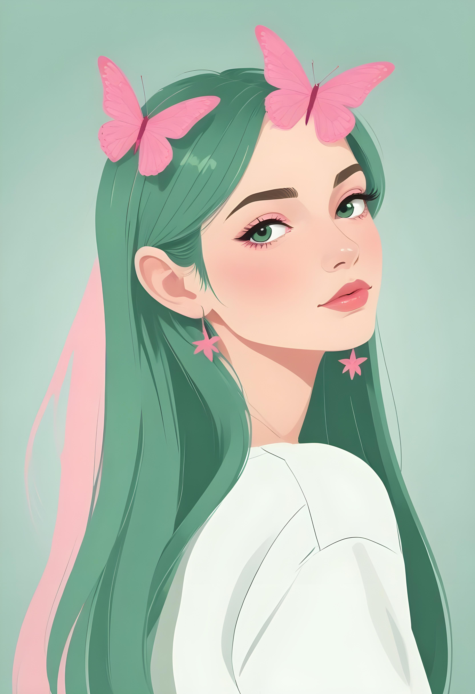

Sobre Mi

Soy artista digital y me apasiona transformar ideas, emociones e historias en imágenes. Exploro diferentes estilos y
técnicas para crear ilustraciones que tengan una identidad propia y conecten con quienes las observan.
Mi trabajo combina creatividad, color y composición, buscando siempre experimentar y encontrar nuevas formas de
expresar una idea a través del arte.
Además de realizar proyectos personales, me interesa colaborar en proyectos donde la ilustración y el diseño visual
puedan aportar personalidad y contar una historia.
Cada obra comienza con una idea y termina convirtiéndose en una imagen.